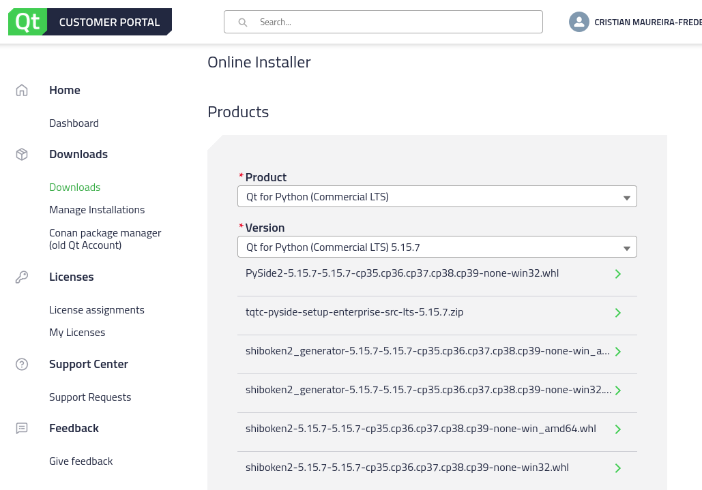

How your Python projects can benefit from Qt?
Dr. Cristián Maureira-Fredes
@cmaureir


⚠️ Before we start!
Previous webinars and videos üì∫
doc.qt.io/qtforpython/videos.html
have a topic idea? let us know!
How Qt plays in the Python world
Getting started with PySide
Pre-requisites
- ✅a newer Python version 3.7+
- ✅an isolated virtual enviromnent.
- ❌Qt installation
Installation (OSS)
Installation (Commercial)

# Remember to activate the enviroment!
pip install *.whl
Installation (Other options)
- macOS: brew
- linux: apt, dnf, pacman, etc...
- all: conda
What now?
Qt Creator
Other IDEs (1/2)
Other IDEs (2/2)
Which technology should you use?
Qt Quick
Qt Widgets
Improvements to the processes
ToolingWidgets designer
pyside6-project
QtDS

"Pythonizing" Qt üêç
# Common Qt structure
# - Using setter/getter
# - No writable properties
table = QTableWidget()
table.setColumnCount(2)
button = QPushButton("Add")
button.setEnabled(False)
layout = QVBoxLayout()
layout.addWidget(table)
layout.addWidget(button)
layout.setSpacing(2)
from __feature__ import (
snake_case
)
table = QTableWidget()
table.set_column_count(2)
button = QPushButton("Add")
button.set_enabled(False)
layout = QVBoxLayout()
layout.add_widget(table)
layout.add_widget(button)
layout.set_spacing(2)
from __feature__ import (
snake_case, true_property
)
table = QTableWidget()
table.column_count = 2
button = QPushButton("Add")
button.enabled = False
layout = QVBoxLayout()
layout.add_widget(table)
layout.add_widget(button)
layout.spacing = 2
Compatible with many freezers and compilers
| Name | License | Qt 6 | Qt 5 | Linux | macOS | Windows |
|---|---|---|---|---|---|---|
| fbs | GPL | partial | ✅ | ✅ | ✅ | ✅ |
| PyInstaller | GPL | partial | ✅ | ✅ | ✅ | ✅ |
| cx_Freeze | MIT | ✅ | ✅ | ✅ | ✅ | ✅ |
| py2exe | MIT | partial | partial | ❌ | ❌ | ✅ |
| py2app | MIT | ✅ | ✅ | ❌ | ✅ | ❌ |
| briefcase | BSD3 | ✅ | ✅ | ✅ | ✅ | ✅ |
| Nuitka | MIT | ✅ | ✅ | ✅ | ✅ | ✅ |
C++ Interaction
scriptable application QtScryptThe latest and greatest from 6.3
Improvements, features and more!
New package structure (1/4)
New package structure (2/4)
New package structure (4/4)
- M2M Protocol modules wheel
better QML support
Python compatibility
- 5.15.x -> 2.7, 3.5+
- 6.3 -> 3.6+
- 6.4 -> 3.7+
Not only vanilla Python üç®
- Python implementation (in Python)
- Has a JIT
- On average 4.2 faster than CPython
The mandelbrot example
bugreports.qt.io/browse/PYSIDE-535
# Python
1/8, max ite: 96, time: 4.111s
2/8, max ite: 288, time: 7.179s
3/8, max ite: 1056, time: 22.156s
4/8, max ite: 4128, time: 82.706s
5/8, max ite: 16416, time: 371.348s
# PyPy
1/8, max ite: 96, time: 4.732s
2/8, max ite: 288, time: 4.99s
3/8, max ite: 1056, time: 6.872s
4/8, max ite: 4128, time: 12.451s
5/8, max ite: 16416, time: 33.341s
Cross compilation (1/3)
RestrictionsCross compilation (2/3)
python setup.py bdist_wheel \
--parallel=16 --ignore-git --reuse-build --standalone --limited-api=yes \
--cmake-toolchain-file=/opt/toolchain-aarch64.cmake \
--qt-host-path=/opt/Qt/6.3.0/gcc_64 \
--plat-name=linux_aarch64
Cross compilation (3/3)
Doc and morepyside6-project
Bridge to other Python modules (1/2)
Bridge to other Python modules (2/2)
Future
- Improve compatibility in the Python ecosystem
- Improve cross compilation ⚙️
- PoC on mobile üì±
- Continue with the WebAssembly efforts üöÄ
- ...and probably your own requests!
Resources
- Product landing page qt.io/qt-for-python
- Wiki page pyside.org
- Official docs doc.qt.io/qtforpython
Communication channels
- Telegram https://t.me/qtforpython
- IRC/Matrix #qt-pyside on Libera.chat
- Mailing list lists.qt-project.org/mailman/listinfo/pyside
More platforms at wiki.qt.io/Qt_for_Python#Community